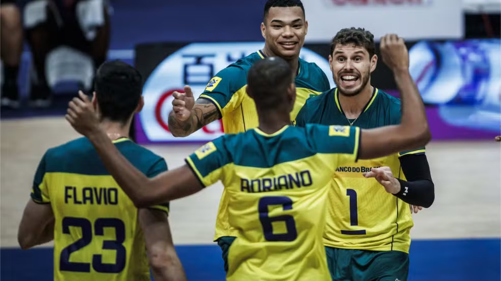
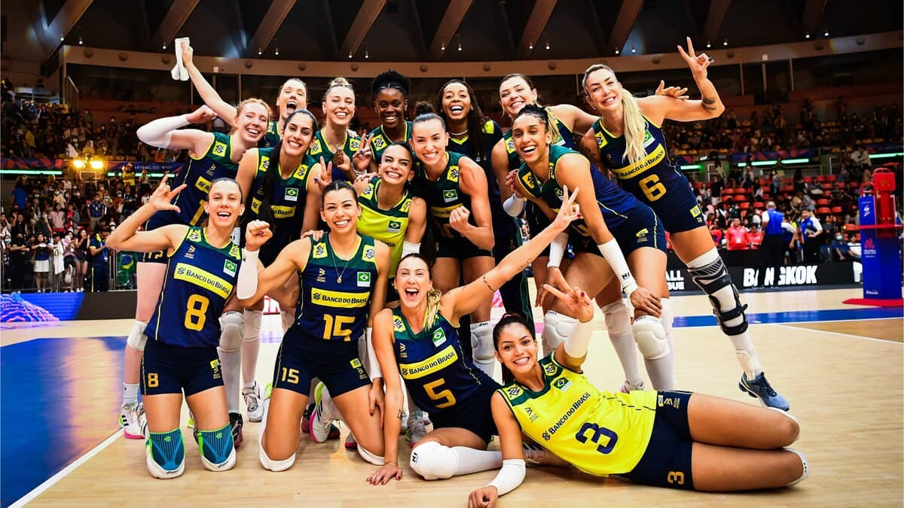

Julia kudiess sofre lesão!

Julia sentiu o joelho depois de saltar para marcar um ponto na vitória de 3 a 0 do Brasil sobre a Sérvia, pela Liga das Nações. Ela deixou a quadra após o lance e teve confirmada a lesão do ligamento cruzado anterior e microfratura do platô tibial.
Brasil vence Sérvia!

O Brasil bateu a Sérvia por 3 sets a 1 (25/21, 25/20, 22/25, 25/22) na noite desta sexta-feira (24), no Maracanãzinho, no Rio de Janeiro, pela terceira rodada da Liga das Nações de Vôlei Masculino.
Melhor início na Liga das Nações feminina!

Pela primeira vez, brasileiras começam o torneio com quatro vitórias. Sequência tem triunfos sobre algozes recentes e ajuda a aliviar relação com o Maracanãzinho, palco de derrotas doídas.